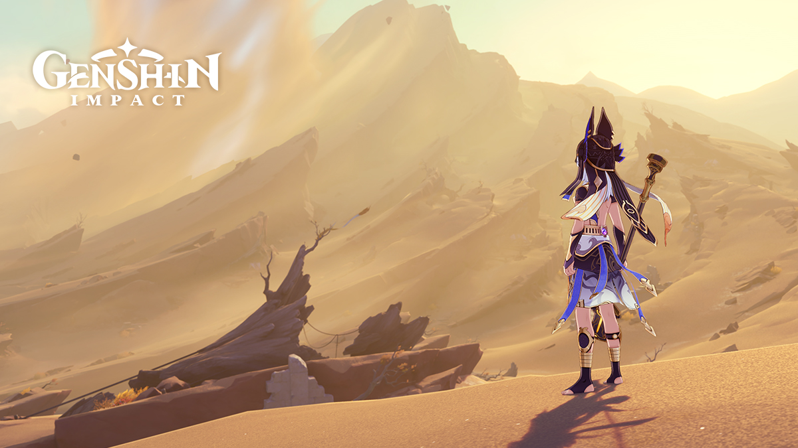

Genshin Impact is an action role-playing game developed and published by miHoYo in 2021.
The game features an anime-style open-world environment and an action-based battle system using elemental magic and character-switching.
The game is free-to-play and is monetized through gacha game mechanics through which players can obtain new characters and weapons.
Genshin Impact takes place in the fantasy world of Teyvat, home to seven nations, each of which is tied to a different element and ruled by a different archon.
The story follows the Traveler, who has traveled across countless worlds with their twin sibling before becoming separated in Teyvat. The Traveler travels in search of the lost sibling with their companion Paimon and becomes involved in the affairs of Teyvat's nations
Switching between characters can be done quickly during combat, allowing the player to use several different combinations of skills and attacks.
Characters may have their strengths enhanced in various ways, such as increasing a character's level and improving artifacts and the weapons that the character equips.

You can create elemental reactions by using different elements together in combat
There are 7 total elements in the game so far:
The game gives you various quests and challenges, upon completing grants the player progress towards increasing their Adventure Rank level and gaining rewards.
A multiplayer mode is available in the form of co-op. Up to 4 players can play together in the overworld and join Domains to fight bosses and level up or just hang out and chat.
The game features cross-platform play, so players on any platform can play with each other.